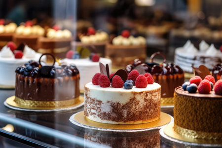
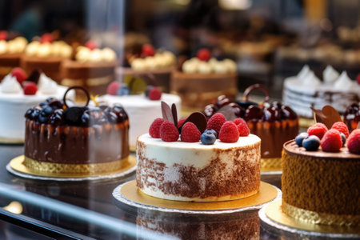

Eclairs
| Eclairs |
|---|
Ingredients
|
| Method Bring water and butter in a saucepan to boiling point. Add sifted flour and salt all at once, and stir vigorously until it leaves the sides of the pan and forms a ball. Remove from heat and allow to cool. Beat in eggs one at a time until velvety and smooth. Pipe eclairs on a greased baking sheet. Bake in a hot oven at 200 degrees for 30 minutes. Reduce heat to 150 degrees and bake for a further 20 minutes or until pastry is well puffed, browned and dry. Fill eclairs with whipped cream and spread with chocolate on top. Variations: |
| Creme Pat Filling |
Ingredients
|
| Method Heat milk, vanilla and sugar in a saucepan until it comes to a simmer. In a separte bowl place the sugar, egg yolks, flour and corn flour. whisk until thick and smooth. Remove milk from heat and slowly pour in a thin stream into the egg mix, while constantly whisking to temper the egg mix. Once tempered add to the remaining milk in the saucepan. On medium heat, whisk vigorously until thick. Allow to cool. Pipe filling into eclairs and decorate with melted chocolate. |